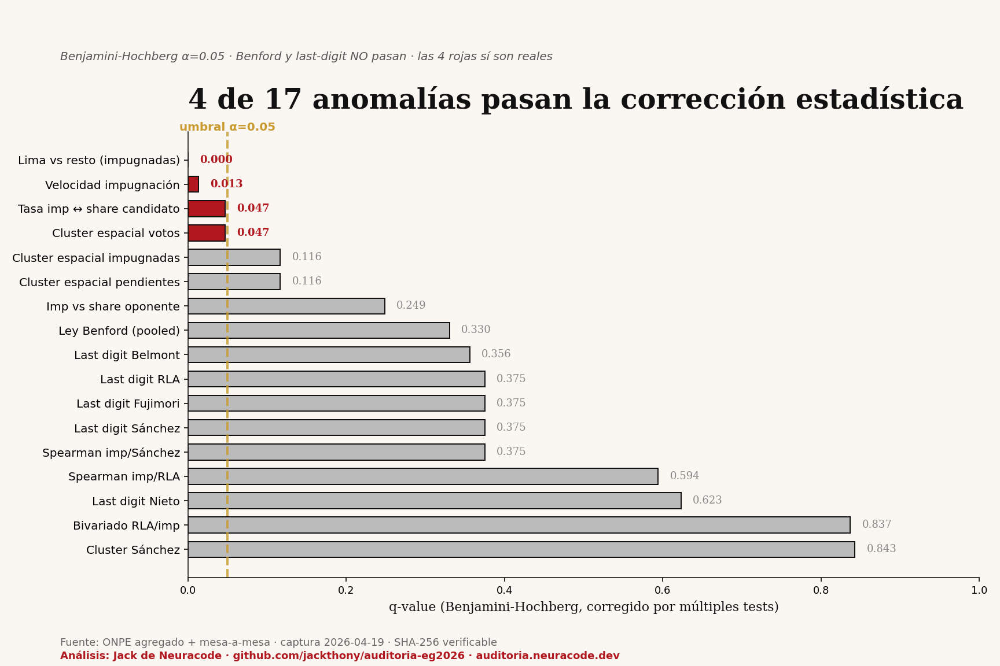

Cuando haces muchas pruebas estadísticas, algunas salen "significativas" solo por azar. Para no engañar al ciudadano, aplicamos Benjamini-Hochberg (corrección por múltiples tests) a las 17 pruebas. Solo 4 sobreviven. Esas 4 son las reales.

| Test | p-value | q-value FDR |
|---|---|---|
| Lima concentra más impugnadas que el resto | 0.000 | 0.000 |
| Velocidad de impugnación difiere por región | 0.0015 | 0.013 |
| Tasa impugnación correlaciona con share candidato | 0.008 | 0.047 |
| Cluster espacial en votos (Moran's I) | 0.011 | 0.047 |
| Test | p-value | q-value | ¿Sirve? |
|---|---|---|---|
| Benford (pooled) | 0.155 | 0.330 | NO |
| Last digit Belmont | 0.189 | 0.356 | NO |
| Last digit RLA | 0.231 | 0.375 | NO |
| Last digit Fujimori | 0.281 | 0.375 | NO |
| Cluster espacial pendientes | 0.041 | 0.116 | NO |
Importante: que Benford y last-digit NO pasen es un punto a favor de la limpieza del conteo en la dimensión manipulación digital. No toda anomalía requiere sospecha.
Todo el código y la data están publicados: